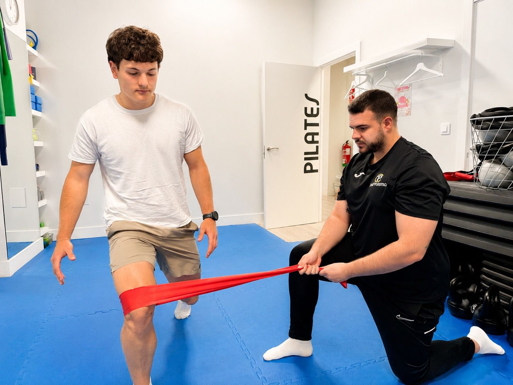

Qué incluye este tratamiento
Recuperación de lesiones deportivas, readaptación, trabajo de fuerza, movilidad y prevención para volver al entrenamiento con seguridad.
- Lesiones musculares, tendinosas y articulares
- Readaptación progresiva al deporte
- Ejercicio terapéutico y control de cargas
- Prevención de recaídas
Cómo trabajamos tu caso
La primera fase consiste en entender tu problema, tus objetivos y cómo afecta a tu día a día. A partir de esa valoración, se seleccionan las técnicas más adecuadas y se define un plan de evolución claro.
El tratamiento puede combinar terapia manual, ejercicio terapéutico, pautas de autocuidado y técnicas avanzadas si están indicadas. La prioridad es que entiendas qué está pasando y qué puedes hacer para mejorar de forma sostenible.
Para quién está recomendado
Este servicio está pensado para personas que tienen dolor, limitación funcional, molestias al practicar deporte o necesidad de recuperar movilidad y confianza. Si tienes dudas, puedes contactar con la clínica para explicar tu caso antes de reservar.
Preguntas frecuentes
¿Tratáis lesiones de corredores y gimnasio?
Sí. Se trabajan lesiones habituales en running, gimnasio, deportes de equipo y actividad física general, siempre con valoración individual.
¿Cuándo puedo volver a entrenar?
Depende de la lesión, la evolución y los objetivos. El tratamiento incluye criterios de progresión para volver de forma segura.
¿Sirve si no soy deportista profesional?
Sí. La fisioterapia deportiva también ayuda a personas activas que quieren recuperarse y entrenar sin dolor.